Contents
clc;
clear;
close all;
recusrive low-pass filter
y(n) = 0.5*y(n-1) + x(n)
o = -pi:0.01:pi; H = 1./(1-0.5*exp(-1i*o)); figure subplot(1,2,1); plot(o/pi,abs(H)) subplot(1,2,2) plot(o/pi,unwrap(angle(H)))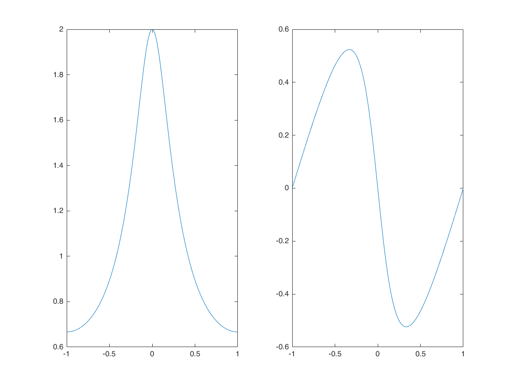
fdatools
o = -pi:0.01:pi; H = (sqrt(3)-1)/2*(exp(1i*o*2)-1)./(exp(1i*o*2)+2-sqrt(3)); figure subplot(1,2,1); plot(o/pi,20*log10(abs(H))); ylim([-90,0]) subplot(1,2,2) plot(o/pi,unwrap(angle(H))) % question: design this with <fdatools> NUM = [0.366000000000000 + 0.00000000000000i, ... 0.00000000000000 - 4.48220728487931e-17i, ... -0.366000000000000 + 4.48220728487931e-17i]; DEN = [1.00000000000000 + 0.00000000000000i, ... -6.33877183238670e-17 + 1.11022302462516e-16i, ... 0.267909760000000 + 0.00000000000000i];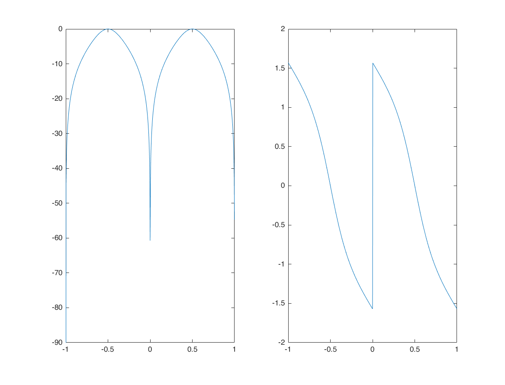
tf2zp, zp2tf
[z,p,k] = tf2zp(NUM, DEN); [b,a] = zp2tf(z,p,k);
fvtool
fvtool(b,a,'polezero')
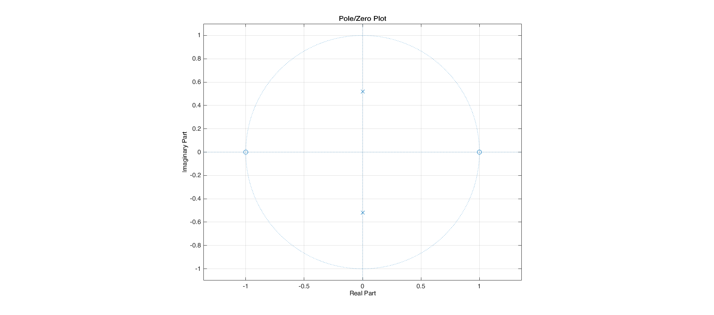 butterworth filter
[b,a] = butter(7, 0.12); [H,W] = freqz(b,a,256); figure subplot(2,2,[1,2]) plot(W/pi,abs(H),'r'); xlabel('\omega/\pi'); ylabel('|H|'); grid on; axis tight; hold on; subplot(2,2,3) plot(W/pi,20*log10(abs(H)),'r'); xlabel('\omega/\pi'); ylabel('|H| dB'); grid on; axis tight; hold on; subplot(2,2,4) plot(W/pi, unwrap(angle(H)),'r'); xlabel('\omega/\pi'); ylabel('angle (rad)'); grid on; axis tight; hold on;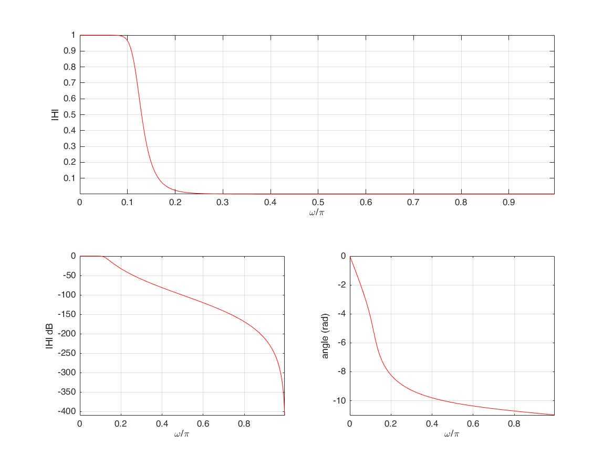
Chebyshev Type I
[b,a] = cheby1(7, 1, 0.12); [H2,W] = freqz(b,a,256); subplot(2,2,[1,2]) plot(W/pi,abs(H2),'g'); xlabel('\omega/\pi'); ylabel('|H|'); grid on; axis tight; subplot(2,2,3) plot(W/pi,20*log10(abs(H2)),'g'); xlabel('\omega/\pi'); ylabel('|H| dB'); grid on; axis tight; subplot(2,2,4) plot(W/pi, unwrap(angle(H2)),'g'); xlabel('\omega/\pi'); ylabel('angle (rad)'); grid on; axis tight;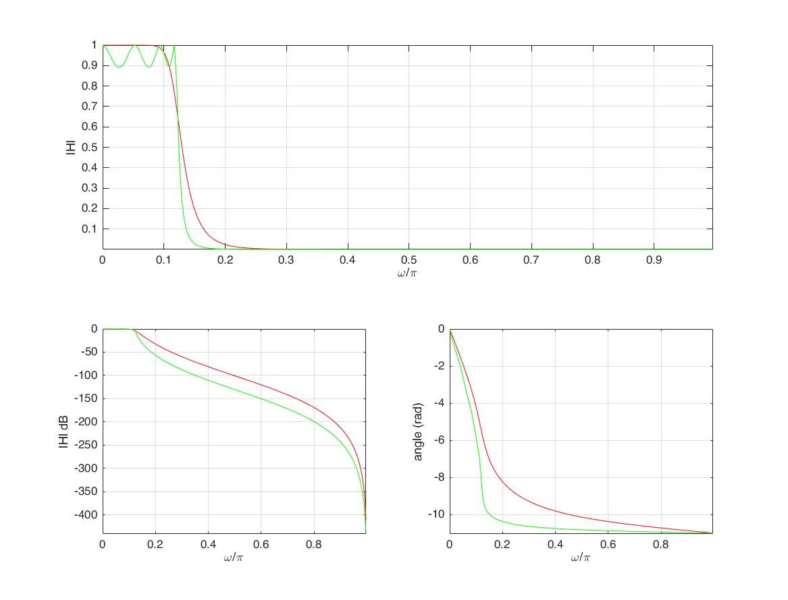
Chebyshev Type II
[b,a] = cheby2(5, 60, 0.3); [H3,W] = freqz(b,a,256); subplot(2,2,[1,2]) plot(W/pi,abs(H3),'b'); xlabel('\omega/\pi'); ylabel('|H|'); grid on; axis tight; subplot(2,2,3) plot(W/pi,20*log10(abs(H3)),'b'); xlabel('\omega/\pi'); ylabel('|H| dB'); grid on; axis tight; subplot(2,2,4) plot(W/pi, unwrap(angle(H3)),'b'); xlabel('\omega/\pi'); ylabel('angle (rad)'); grid on; axis tight;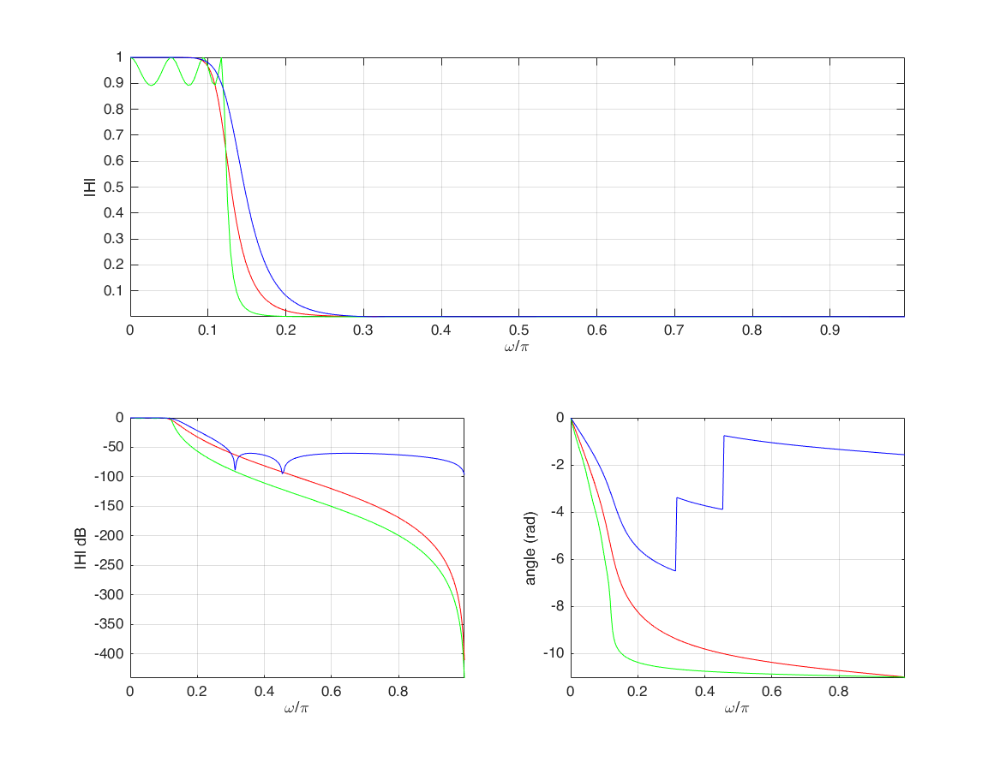
Eliptic
[b,a] = ellip(4, 1, 60, 0.1); [H4,W] = freqz(b,a,256); subplot(2,2,[1,2]) plot(W/pi,abs(H4),'k'); xlabel('\omega/\pi'); ylabel('|H|'); grid on; axis tight; subplot(2,2,3) plot(W/pi,20*log10(abs(H4)),'k'); xlabel('\omega/\pi'); ylabel('|H| dB'); grid on; axis tight; subplot(2,2,4) plot(W/pi, unwrap(angle(H4)),'k'); xlabel('\omega/\pi'); ylabel('angle (rad)'); grid on; axis tight;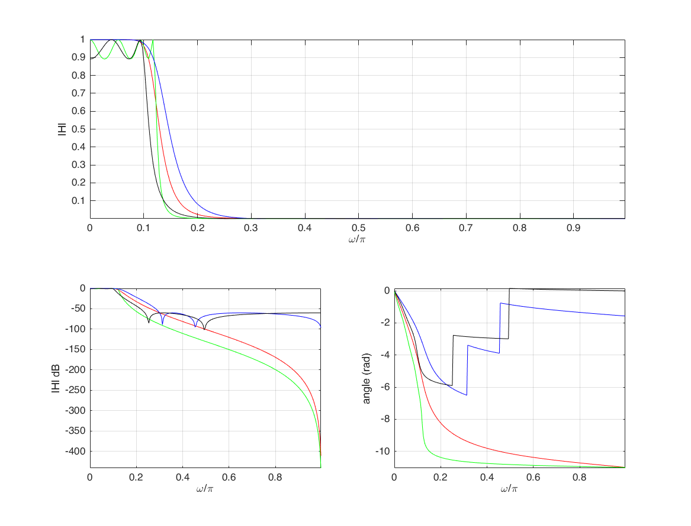
Use b,a coeffs to filter a signal with filter() function
nx = 0:1023; x = (1-(nx-500).^2/4).*exp(-(nx-500).^2/2/4); [b,a] = butter(7, 0.3); y = filter(b,a,x); figure subplot(2,1,1) plot(nx,x,'b'); axis tight; xlim([460,540]); hold on; plot(nx,y,'r'); subplot(2,1,2); sf = fft(x,1024); plot(linspace(0,pi,length(sf)/2)/pi, ... abs(sf(1:length(sf)/2)), 'b'); hold on; sf1 = fft(y,1024); plot(linspace(0,pi,length(sf1)/2)/pi, ... abs(sf1(1:length(sf1)/2)), 'r');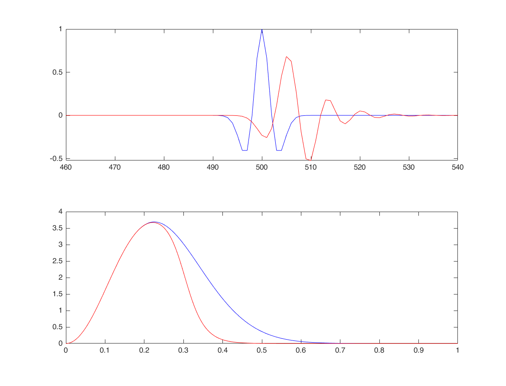
Use filtfilt to have zero-phase filter
% caution, amplitude is applied twice, but phase is cancelled out y = filtfilt(b,a,x); subplot(2,1,1) plot(nx,y,'k'); subplot(2,1,2); sf1 = fft(y,1024); plot(linspace(0,pi,length(sf1)/2)/pi, ... abs(sf1(1:length(sf1)/2)), 'k');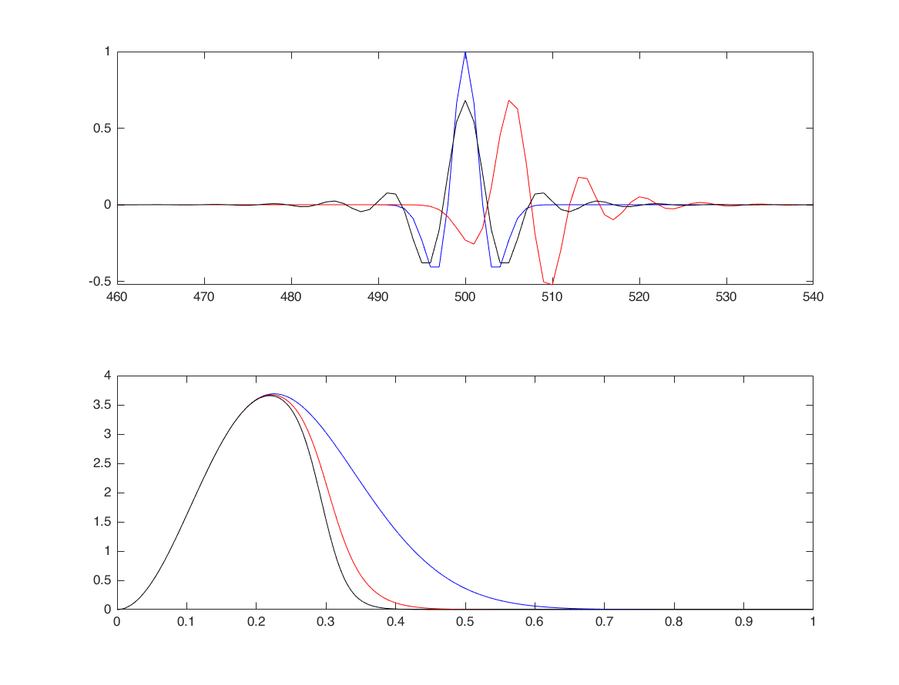
designfilt is the second way to use IIR filters
Fs = 2000; % sampling frequency -> Niquist-freq is Fs/2 Fp = 100; % Hz - passband corner Fst = 300; % stopband frequency Ap = 1.0; % dB - passband ripple amplitude Ast = 60; % dB - stopband ripple amplitude dbutter = designfilt('lowpassiir', ... 'PassbandFrequency',Fp, ... 'StopbandFrequency',Fst, ... 'PassbandRipple',Ap, ... 'StopbandAttenuation',Ast, ... 'SampleRate',Fs, ... 'DesignMethod','butter'); filtord(dbutter) % fvtool(dbutter) y = filter(dbutter,x); subplot(2,1,1) plot(nx,y,'m'); subplot(2,1,2); sf1 = fft(y,1024); plot(linspace(0,pi,length(sf1)/2)/pi, ... abs(sf1(1:length(sf1)/2)), 'm');
ans =
7
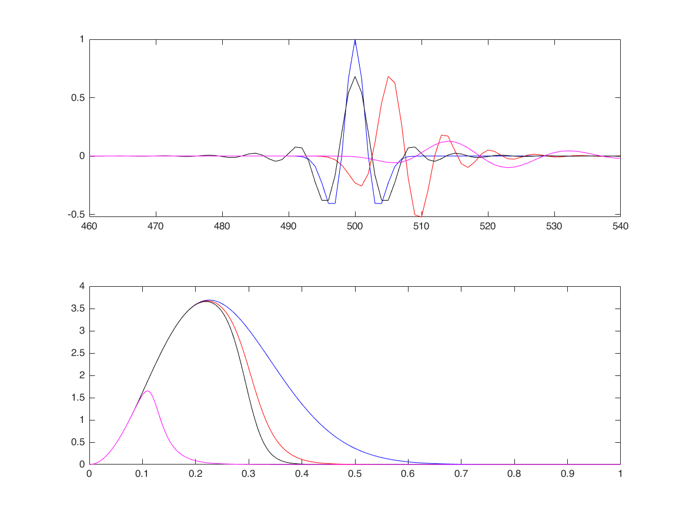 Fs = 2000; % sampling frequency -> Niquist-freq is Fs/2 Fp = 100; % Hz - passband corner Fst = 300; % stopband frequency Ap = 1.0; % dB - passband ripple amplitude Ast = 60; % dB - stopband ripple amplitude dbutter = designfilt('lowpassiir', ... 'PassbandFrequency',Fp, ... 'StopbandFrequency',Fst, ... 'PassbandRipple',Ap, ... 'StopbandAttenuation',Ast, ... 'SampleRate',Fs, ... 'DesignMethod','butter'); dcheby1 = designfilt('lowpassiir', ... 'PassbandFrequency',Fp, ... 'StopbandFrequency',Fst, ... 'PassbandRipple',Ap, ... 'StopbandAttenuation',Ast, ... 'SampleRate',Fs, ... 'DesignMethod','cheby1'); dcheby2 = designfilt('lowpassiir', ... 'PassbandFrequency',Fp, ... 'StopbandFrequency',Fst, ... 'PassbandRipple',Ap, ... 'StopbandAttenuation',Ast, ... 'SampleRate',Fs, ... 'DesignMethod','cheby2'); dellip = designfilt('lowpassiir', ... 'PassbandFrequency',Fp, ... 'StopbandFrequency',Fst, ... 'PassbandRipple',Ap, ... 'StopbandAttenuation',Ast, ... 'SampleRate',Fs, ... 'DesignMethod','ellip'); ford = [filtord(dbutter), filtord(dcheby1), filtord(dcheby2), filtord(dellip)]; figure; hfv = fvtool(dbutter, dcheby1, dcheby2, dellip, 'Analysis', 'grpdelay'); legend(hfv,'Butterworth','Chebyshev I', 'Chebyshev II', 'Elliptic'); figure; hfv = fvtool(dbutter, dcheby1, dcheby2, dellip, 'polezero'); legend(hfv,'Butterworth','Chebyshev I', 'Chebyshev II', 'Elliptic');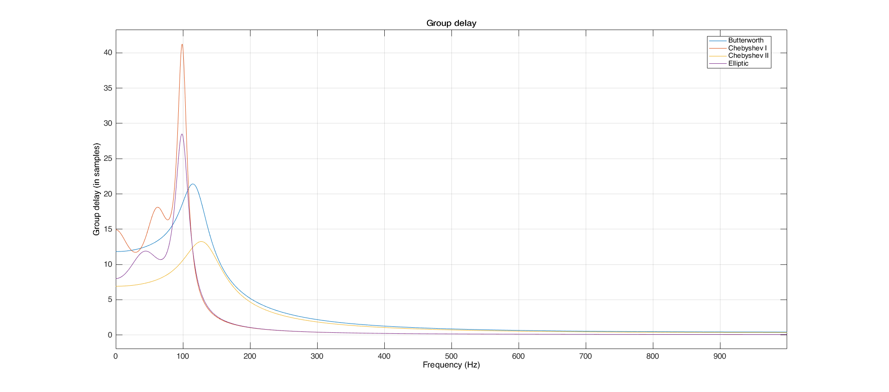 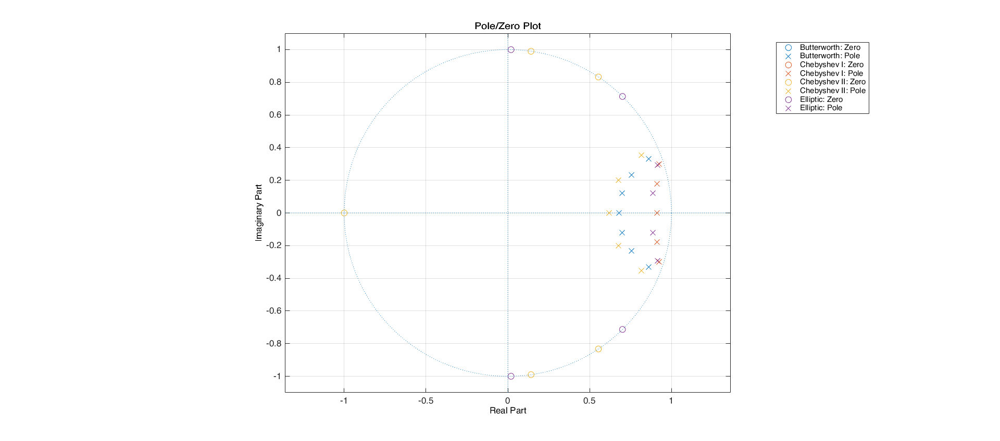